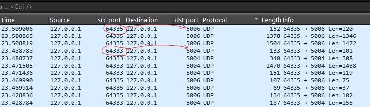
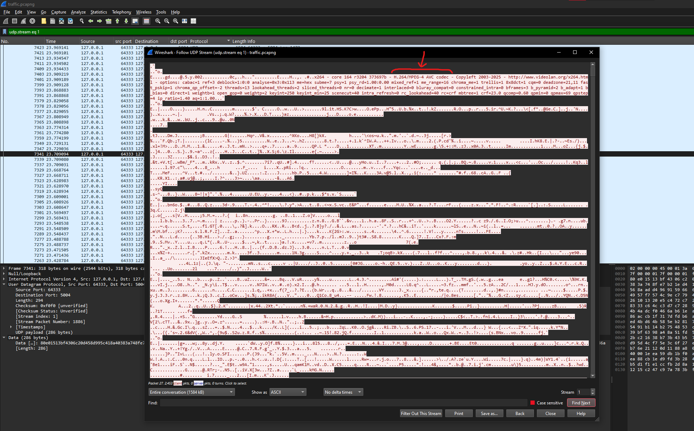
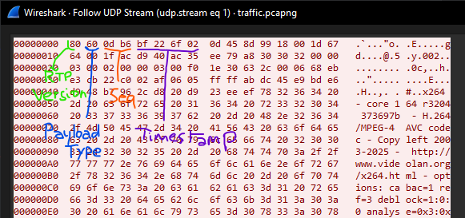
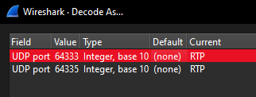
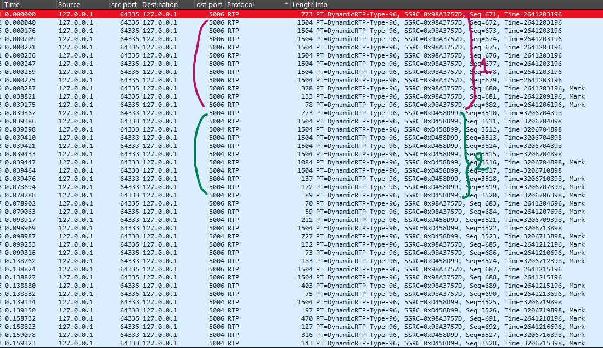
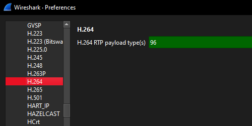
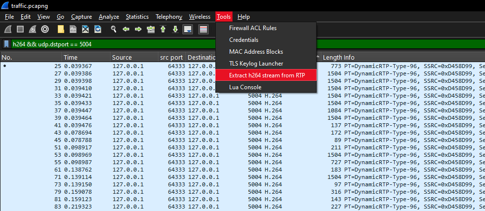
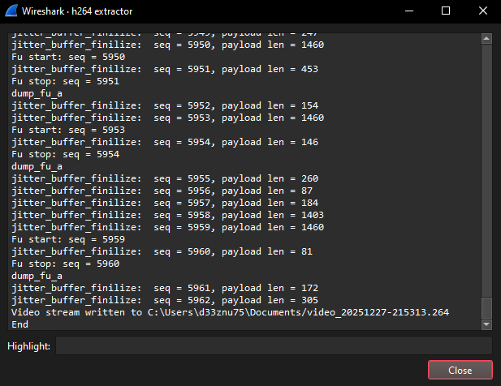
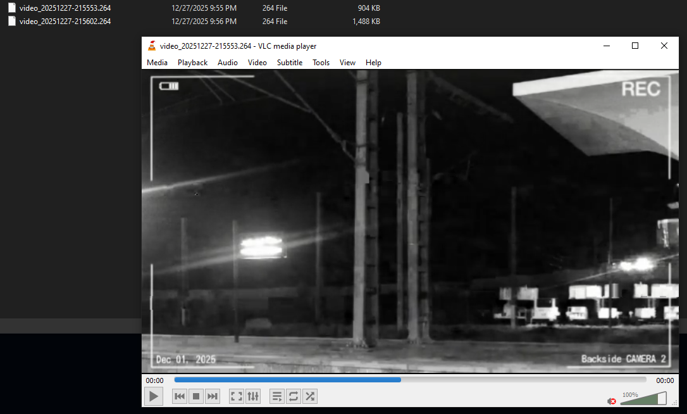
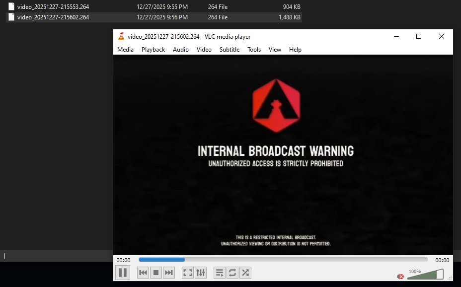

Dumping an H.264 Video Stream from a Packet Capture (RTP)
Challenge Overview
In this challenge, I gave participants a PCAP containing UDP traffic. The goal is to identify what is being transmitted (RTP) and extract the underlying H.264 video streams from the capture.
Solution
The PCAP contains a large amount of UDP traffic. When analyzing the capture in Wireshark, we can see two local UDP conversations.
One conversation is from port 64333 to port 5004, and the other is from port 64335 to port 5006.

Following one of the conversations, we see the following header in the payload:
x264 - core 164 r3204 373697b - H.264/MPEG-4 AVC codec - Copyleft 2003-2025 - http://www.videolan.org/x264.html - options: cabac=1 ref=3 deblock=1:0:0 analyse=0x3:0x113 me=hex subme=7 psy=1 psy_rd=1.00:0.00 mixed_ref=1 me_range=16 chroma_me=1 trellis=1 8x8dct=1 cqm=0 deadzone=21,11 fast_pskip=1 chroma_qp_offset=-2 threads=13 lookahead_threads=2 sliced_threads=0 nr=0 decimate=1 interlaced=0 bluray_compat=0 constrained_intra=0 bframes=3 b_pyramid=2 b_adapt=1 b_bias=0 direct=1 weightb=1 open_gop=0 weightp=2 keyint=250 keyint_min=25 scenecut=40 intra_refresh=0 rc_lookahead=40 rc=crf mbtree=1 crf=23.0 qcomp=0.60 qpmin=0 qpmax=69 qpstep=4 ip_ratio=1.40 aq=1:1.00

This strongly suggests that the traffic is carrying H.264 video. The transport is RTP (over UDP): the first bytes of each payload match the RTP header structure, for example:
80 60 0d b6 bf ...
0x80 indicates RTP version 2. 0x60 corresponds to payload type 96 (dynamic), which is commonly used for H.264.

To confirm this in Wireshark, use the Decode As... feature:
- Right-click any packet from either UDP conversation and select Decode As...
- Set the current decode for UDP to RTP (do this for both conversations)

After decoding, the packet details will show RTP fields. We can also see two SSRC values, 0x98A3757D and 0x0D458D99, which indicates two separate RTP streams. In other words, there are two video streams in the PCAP.

Each stream is sent to a different destination port (5004 and 5006):
-
Stream 1: SSRC
0x98A3757D-> port5006 -
Stream 2: SSRC
0x0D458D99-> port5004
To extract the H.264 video streams from RTP, we need to tell Wireshark that RTP payload type 96 should be interpreted as H.264:
- Edit -> Preferences -> Protocols -> H.264
- Set the RTP payload type to
96

Now we can filter each stream by destination port:
h264 && udp.dstport == 5004
and
h264 && udp.dstport == 5006
Next, use volvet/h264extractor to extract the raw H.264 elementary stream for each RTP flow.


The output is a raw .264 file (by default, the tool saves it under your Documents folder). You can play it with VLC, or you can convert it into MP4 using FFmpeg:
ffmpeg.exe -i <video.264> -c copy converted.mp4


For the challenge, the flag is split across the two videos. Combining both parts reveals the final flag.